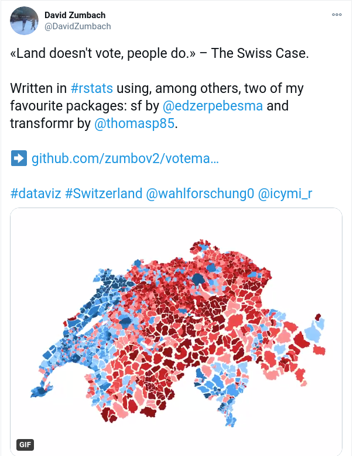
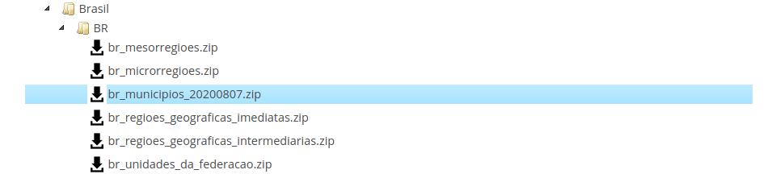
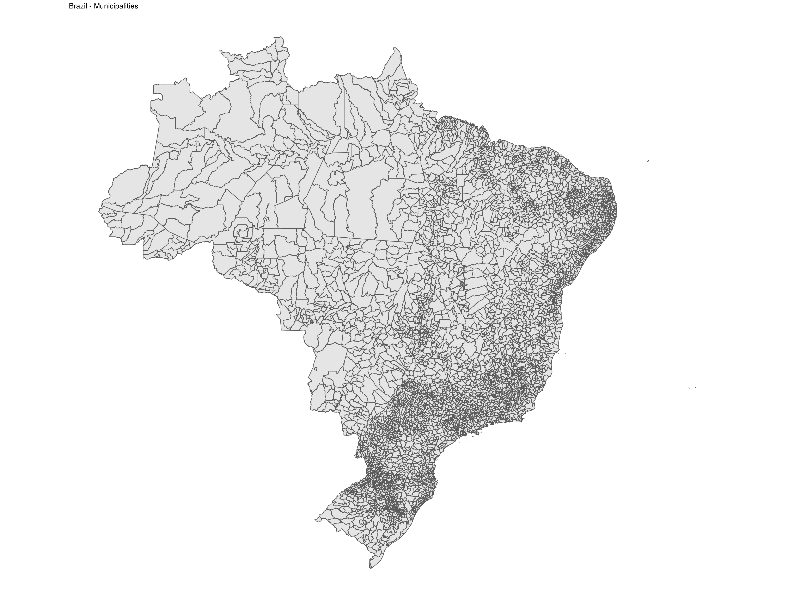
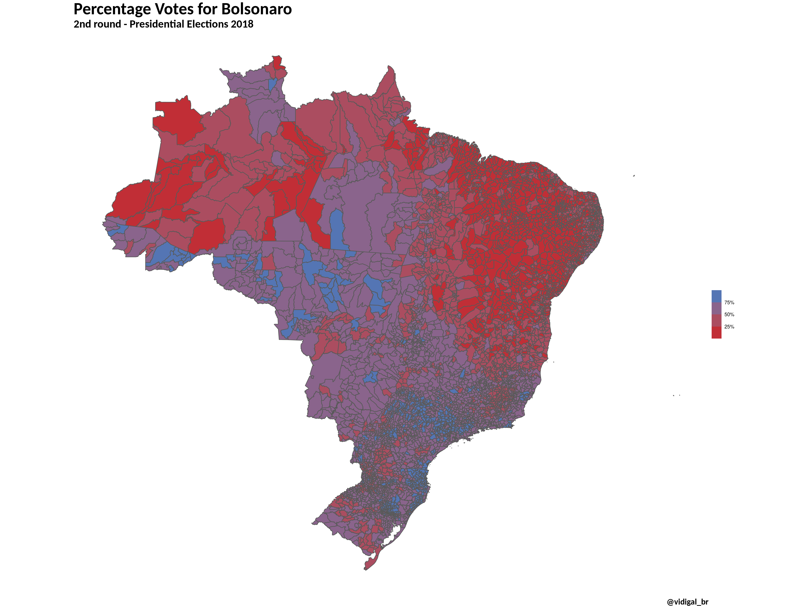
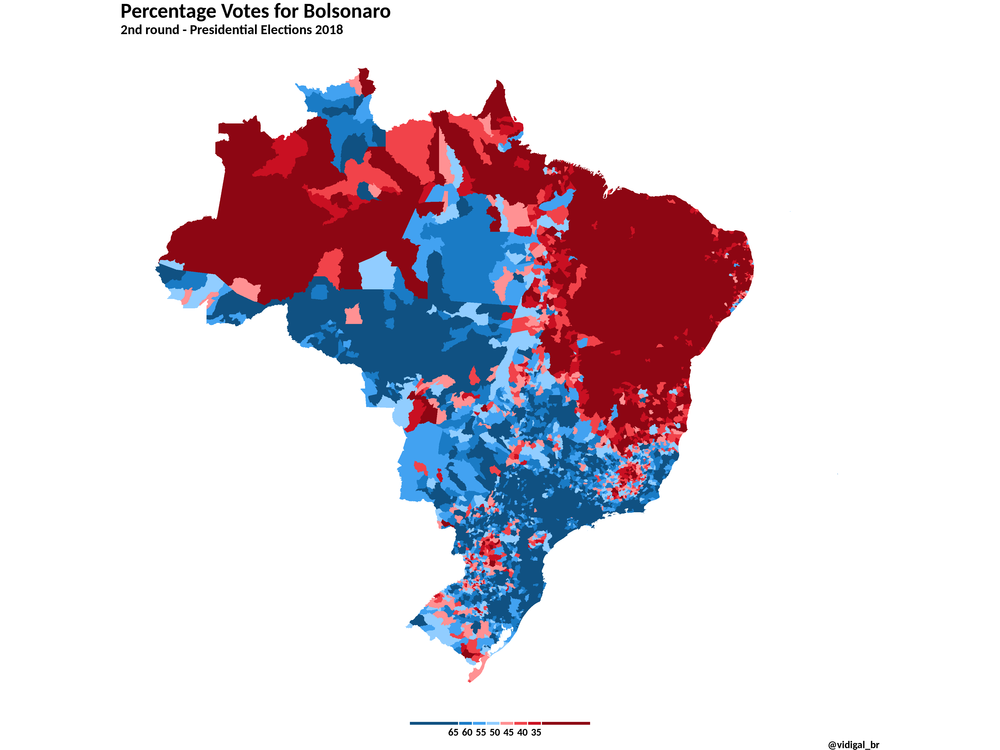
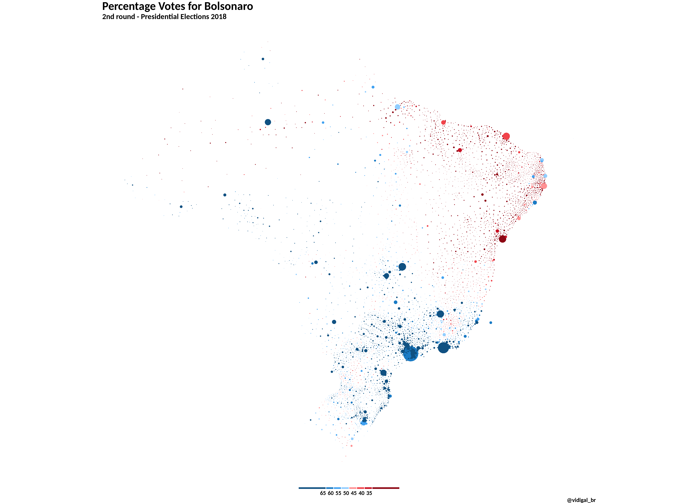

Motivation
You may think this post was written too late as were already in 2021 and we are working on the 2018 Brazils presidential election data. Nevertheless, its never late to do nice data visualizations, and I got inspiration to write this post after seeing an outstanding map made by David Zumbach. He made the code available on this Github repository and I will apply roughly the same idea (mine is a bit simpler) in the Brazilian election.

Presidential Elections
The presidential election takes place every four years in Brazil. The last one occurred in 2018 and ended up with a winning of the candidate Bolsonaro.

However, I am not here to talk about how Bolsonaro is (mis)leading Brazil. I am interested in visualizing the share of votes he got in the second round of the election. For more information regarding the Brazilian elections, please go visit the Tribunal Superior Eleitoral (TSE) webpage.
Data
In order to produce a map with the proportion of votes Bolsonaro got, we will need to pull:
- the shape files at municipalities level from IBGE (Instituto Brasileiro de Geografia e Estatstica);
- the results of the elections from TSE;
- mapping table with municipalities codes IBGE - TSE.
Shape files
The shape files can be downloaded from here. Then you select Downloads \(\Rightarrow\) municipio_2019 \(\Rightarrow\) Brasil \(\Rightarrow\) BR \(\Rightarrow\) br_municipios zip file.

Election results
The outcome of the elections are available here. The data is divided by state, so you will need to download 28 zip files (26 states + Distrito Federal + Votes from Abroad). Instead, if you want to go for a smart solution, please have a look at this post that I have written. I will walk you on how to download these data automatically from R.

Mapping table IBGE - TSE
This table is quite useful as it contains the mapping of municipalities codes from IBGE to TSE. It is stored on this Github repository.
Reading Input Data
Lets start by reading the mapping table from the Github repository.
download.file(url = 'https://raw.githubusercontent.com/betafcc/Municipios-Brasileiros-TSE/master/municipios_brasileiros_tse.csv',
destfile = 'data/mapping_tse_ibge.csv')
mapping_tse_ibge <- read_csv('data/mapping_tse_ibge.csv')
mapping_tse_ibge <- mapping_tse_ibge %>%
select(codigo_tse, codigo_ibge) %>%
mutate(codigo_tse = as.character(str_pad(codigo_tse, 5, pad = '0')),
codigo_ibge = as.character(codigo_ibge))
mapping_tse_ibge
# A tibble: 5,570 x 2
codigo_tse codigo_ibge
<chr> <chr>
1 01120 1200013
2 01570 1200054
3 01058 1200104
4 01007 1200138
5 01015 1200179
6 01074 1200203
7 01112 1200252
8 01139 1200302
9 01104 1200328
10 01554 1200344
# with 5,560 more rowsThe shape file from IBGE is below.
br_shp <- st_read("data/br_municipios_20200807/BR_Municipios_2019.shp")
Reading layer `BR_Municipios_2019' from data source `/home/vidigal/Documents/projects/github/brunovidigal_distill/_posts/2021-02-18-land-doesnt-vote-people-do-an-application-on-2018-brazils-presidential-election/data/br_municipios_20200807/BR_Municipios_2019.shp' using driver `ESRI Shapefile'
Simple feature collection with 5572 features and 4 fields
geometry type: MULTIPOLYGON
dimension: XY
bbox: xmin: -73.99045 ymin: -33.75118 xmax: -28.84764 ymax: 5.271841
proj4string: +proj=longlat +ellps=GRS80 +no_defs class(br_shp)
[1] "sf" "data.frame"If we plot the shape file above we get:
br_shp %>%
ggplot() +
geom_sf() +
theme_void() +
ggtitle('Brazil - Municipalities')

The last piece of info needed are the votes. As we saw in my previous post, the results of the elections are split by state (SG_UF), and within each file/state, the data are disaggregated by municipality (NM_MUNICIPIO) and electoral section (NR_SECAO). Lets first get the name of all csvs files we need to read. Instead of typing one by one

We can use the function list.files().
csvs_to_read = list.files(
path = "data/elections_2018",
pattern = ".*(bweb_2t).*csv$",
recursive = TRUE,
full.names = TRUE
)
head(csvs_to_read)
[1] "data/elections_2018/BWEB_2t_AC_301020181744/bweb_2t_AC_301020181744.csv"
[2] "data/elections_2018/BWEB_2t_AL_301020181744/bweb_2t_AL_301020181745.csv"
[3] "data/elections_2018/BWEB_2t_AM_301020181744/bweb_2t_AM_301020181745.csv"
[4] "data/elections_2018/BWEB_2t_AP_301020181744/bweb_2t_AP_301020181746.csv"
[5] "data/elections_2018/BWEB_2t_BA_301020181744/bweb_2t_BA_301020181746.csv"
[6] "data/elections_2018/BWEB_2t_CE_301020181744/bweb_2t_CE_301020181747.csv"Now were ready to go ahead and read all those files. Another amazing function that were going to use is map_df() from purrr. Here I am using also fread() from package data.table. Combining both tidyverse and data.table solutions minimize as much as possible the time to read and combine the files into one single object of class tbl_df.
elections_2nd_round <-
csvs_to_read %>%
map_df(~fread(., colClasses = 'character', showProgress = TRUE)) %>%
as_tibble()
The final object has 2904174 rows and 42 columns.
Lets see how our data looks like. As I am biased I will filter my hometown Rio Pomba. My city has about 18,000 habitants and is located in the countryside of the state of Minas Gerais. Were famous about our cheese and doce de leite (milk jam or dulce de leche in Spanish). But here we go, we select Rio Pomba and a random electoral section. Mind that the data found contain not only the number of votes for each candidate, but also the number of null and blank. In this analysis, were interested in analysing only the valid votes.
tibble [8 42] (S3: tbl_df/tbl/data.frame)
$ DT_GERACAO : chr [1:8] "30/10/2018" "30/10/2018" "30/10/2018" "30/10/2018" ...
$ HH_GERACAO : chr [1:8] "17:49:29" "17:49:29" "17:49:29" "17:49:29" ...
$ ANO_ELEICAO : chr [1:8] "2018" "2018" "2018" "2018" ...
$ CD_PLEITO : chr [1:8] "229" "229" "229" "229" ...
$ DT_PLEITO : chr [1:8] "28/10/2018" "28/10/2018" "28/10/2018" "28/10/2018" ...
$ NR_TURNO : chr [1:8] "2" "2" "2" "2" ...
$ CD_ELEICAO : chr [1:8] "296" "296" "296" "296" ...
$ DS_ELEICAO : chr [1:8] "Elei\xe7\xe3o Geral Federal 2018" "Elei\xe7\xe3o Geral Federal 2018" "Elei\xe7\xe3o Geral Federal 2018" "Elei\xe7\xe3o Geral Federal 2018" ...
$ DT_ELEICAO : chr [1:8] "28/10/2018" "28/10/2018" "28/10/2018" "28/10/2018" ...
$ SG_ UF : chr [1:8] "MG" "MG" "MG" "MG" ...
$ CD_MUNICIPIO : chr [1:8] "51152" "51152" "51152" "51152" ...
$ NM_MUNICIPIO : chr [1:8] "RIO POMBA" "RIO POMBA" "RIO POMBA" "RIO POMBA" ...
$ NR_ZONA : chr [1:8] "239" "239" "239" "239" ...
$ NR_SECAO : chr [1:8] "20" "20" "20" "20" ...
$ NR_LOCAL_VOTACAO : chr [1:8] "1015" "1015" "1015" "1015" ...
$ CD_CARGO_PERGUNTA : chr [1:8] "1" "1" "1" "1" ...
$ DS_CARGO_PERGUNTA : chr [1:8] "Presidente" "Presidente" "Presidente" "Presidente" ...
$ NR_PARTIDO : chr [1:8] "#NULO#" "#NULO#" "13" "17" ...
$ SG_PARTIDO : chr [1:8] "#NULO#" "#NULO#" "PT" "PSL" ...
$ NM_PARTIDO : chr [1:8] "#NULO#" "#NULO#" "Partido dos Trabalhadores" "Partido Social Liberal" ...
$ QT_APTOS : chr [1:8] "304" "304" "304" "304" ...
$ QT_COMPARECIMENTO : chr [1:8] "226" "226" "226" "226" ...
$ QT_ABSTENCOES : chr [1:8] "78" "78" "78" "78" ...
$ CD_TIPO_URNA : chr [1:8] "1" "1" "1" "1" ...
$ DS_TIPO_URNA : chr [1:8] "Apurada" "Apurada" "Apurada" "Apurada" ...
$ CD_TIPO_VOTAVEL : chr [1:8] "2" "3" "1" "1" ...
$ DS_TIPO_VOTAVEL : chr [1:8] "Branco" "Nulo" "Nominal" "Nominal" ...
$ NR_VOTAVEL : chr [1:8] "95" "96" "13" "17" ...
$ NM_VOTAVEL : chr [1:8] "Branco" "Nulo" "FERNANDO HADDAD" "JAIR BOLSONARO" ...
$ QT_VOTOS : chr [1:8] "6" "20" "91" "109" ...
$ NR_URNA_EFETIVADA : chr [1:8] "1144507" "1144507" "1144507" "1144507" ...
$ CD_CARGA_1_URNA_EFETIVADA : chr [1:8] "711.509.856.566.808.007." "711.509.856.566.808.007." "711.509.856.566.808.007." "711.509.856.566.808.007." ...
$ CD_CARGA_2_URNA_EFETIVADA : chr [1:8] "218.832" "218.832" "218.832" "218.832" ...
$ CD_FLASCARD_URNA_EFETIVADA: chr [1:8] "2685D0FE" "2685D0FE" "2685D0FE" "2685D0FE" ...
$ DT_CARGA_URNA_EFETIVADA : chr [1:8] "23/09/2018 08:19:00" "23/09/2018 08:19:00" "23/09/2018 08:19:00" "23/09/2018 08:19:00" ...
$ DS_CARGO_PERGUNTA_SECAO : chr [1:8] "1 - 20" "1 - 20" "1 - 20" "1 - 20" ...
$ DS_AGREGADAS : chr [1:8] "#NULO#" "#NULO#" "#NULO#" "#NULO#" ...
$ DT_ABERTURA : chr [1:8] "28/10/2018 08:00:00" "28/10/2018 08:00:00" "28/10/2018 08:00:00" "28/10/2018 08:00:00" ...
$ DT_ENCERRAMENTO : chr [1:8] "28/10/2018 17:00:58" "28/10/2018 17:00:58" "28/10/2018 17:00:58" "28/10/2018 17:00:58" ...
$ QT_ELEITORES_BIOMETRIA_NH : chr [1:8] "3" "3" "3" "3" ...
$ NR_JUNTA_APURADORA : chr [1:8] "#NULO#" "#NULO#" "#NULO#" "#NULO#" ...
$ NR_TURMA_APURADORA : chr [1:8] "#NULO#" "#NULO#" "#NULO#" "#NULO#" ...
- attr(*, ".internal.selfref")=<externalptr> As you may be thinking, we need to:
- aggregate the data at municipality level;
- filter only valid votes for president;
- calculate Bolsonaros share (% of votes for Bolsonaro);
- get the municipality code at IBGE code by merging with the mapping table.
The piece of code below does this for us.
votes_by_city <- elections_2nd_round %>%
filter(!is.na(as.numeric(QT_VOTOS))) %>%
group_by(NM_MUNICIPIO, CD_MUNICIPIO, `SG_ UF`, NM_VOTAVEL, DS_CARGO_PERGUNTA) %>%
summarise(votes_total = sum(as.numeric(QT_VOTOS))) %>%
filter(DS_CARGO_PERGUNTA == 'Presidente' & `SG_ UF` != 'ZZ') %>% ## ZZ means votes abroad
spread(NM_VOTAVEL, votes_total) %>%
mutate(valid_votes = `FERNANDO HADDAD` + `JAIR BOLSONARO`,
perc_bolsonaro = `JAIR BOLSONARO`/valid_votes) %>%
left_join(mapping_tse_ibge, by = c("CD_MUNICIPIO" = "codigo_tse")) %>%
ungroup() %>%
select(codigo_ibge, valid_votes, perc_bolsonaro)
votes_by_city
# A tibble: 5,570 x 3
codigo_ibge valid_votes perc_bolsonaro
<chr> <dbl> <dbl>
1 2100055 53238 0.515
2 5200050 6213 0.690
3 3100104 3938 0.538
4 5200100 6985 0.745
5 3100203 11870 0.639
6 1500107 81542 0.244
7 2300101 5346 0.127
8 2900207 9530 0.218
9 2900108 4436 0.393
10 4100103 4513 0.608
# with 5,560 more rowsCategorizing our variable
# Recoding Bolsonaro's votes
votes_by_city <- votes_by_city %>%
mutate(
perc_bolsonaro_cat = factor(case_when(
perc_bolsonaro < 0.35 ~ "",
perc_bolsonaro >= 0.35 & perc_bolsonaro < 0.40 ~ "35",
perc_bolsonaro >= 0.40 & perc_bolsonaro < 0.45 ~ "40",
perc_bolsonaro >= 0.45 & perc_bolsonaro < 0.50 ~ "45",
perc_bolsonaro >= 0.50 & perc_bolsonaro < 0.55 ~ "50",
perc_bolsonaro >= 0.55 & perc_bolsonaro < 0.60 ~ "55",
perc_bolsonaro >= 0.60 & perc_bolsonaro < 0.65 ~ "60",
perc_bolsonaro >= 0.65 ~ "65"
), levels = c("", "35", "40", "45", "50", "55", "60", "65")
)
)
Data Merging
Map
Here we go, the map of votes at municipality level.
ggplot(data = votes_by_city_shp, aes(geometry = geometry)) +
geom_sf(aes(fill = perc_bolsonaro)) +
scale_fill_binned(low = "#c91022", high = "#1a7bc5", labels = percent) +
# scale_fill_viridis_c(option = "plasma", trans = "sqrt", labels = percent) +
theme_void() +
labs(title = "Percentage Votes for Bolsonaro",
subtitle = "2nd round - Presidential Elections 2018",
caption = "@vidigal_br") +
theme(legend.title = element_blank()) +
# theme(legend.key.size = unit(0.2, "cm")) +
theme(plot.title = element_text(size = 30, face = "bold", family = 'calibri')) +
theme(plot.subtitle = element_text(size = 20, face = "bold", family = 'calibri')) +
theme(plot.caption = element_text(size = 15, face = "bold", family = 'calibri'))

The map of the categorical variable looks like this
ggplot(votes_by_city_shp$geometry) +
geom_sf(aes(fill = votes_by_city_shp$perc_bolsonaro_cat), color = NA) +
coord_sf() +
scale_fill_manual(
values = c(
"#8d0613", "#c91022", "#f1434a", "#ff9193",
"#91cdff", "#42a2f1", "#1a7bc5", "#105182"
),
drop = F,
guide = guide_legend(
direction = "horizontal",
keyheight = unit(2, units = "mm"),
keywidth = unit(c(25, rep(7, 6), 25), units = "mm"),
title.position = "top",
title.hjust = 0.5,
label.hjust = 1,
nrow = 1,
byrow = T,
reverse = T,
label.position = "bottom",
)
) +
theme_void() +
theme(legend.position = "bottom") +
theme(plot.title = element_text(size = 30, face = "bold", family = 'calibri')) +
theme(plot.subtitle = element_text(size = 20, face = "bold", family = 'calibri')) +
theme(plot.caption = element_text(size = 15, face = "bold", family = 'calibri')) +
theme(legend.text = element_text(size = 15, face = "bold", family = 'calibri')) +
labs(title = "Percentage Votes for Bolsonaro",
subtitle = "2nd round - Presidential Elections 2018",
caption = "@vidigal_br") +
theme(legend.title = element_blank())

However, as land doesnt vote people do, we will make another map taking into account the number of valid votes per each municipality. This piece of code comes from David Zumbach, I have just adapted to my own data/variables.
# Prep function inputs (specify radius factor)
radii <- votes_by_city_shp %>%
# filter(mun_id %in% start$id) %>%
select(CD_MUN, valid_votes) %>%
mutate(radius = sqrt(3000*valid_votes / pi)) %>%
arrange(CD_MUN) %>%
pull(radius)
ids <- votes_by_city_shp$CD_MUN
# Transformation from Polygons to circles
# Function to draw circles
draw_circle <- function(id, centre_x = 0, centre_y = 0, radius = 1000, detail = 360, st = TRUE) {
i <- seq(0, 2 * pi, length.out = detail + 1)[-detail - 1]
x <- centre_x + (radius * sin(i))
y <- centre_y + (radius * cos(i))
if (st) {
cir <- st_polygon(list(cbind(x, y)[c(seq_len(detail), 1), , drop = FALSE]))
d <- st_sf(data.frame(id = id, geom = st_sfc(cir)))
} else {
d <- tibble(id = id, x = x, y = y)
}
return(d)
}
# Draw circles
# centroids <- as_tibble(st_coordinates(st_centroid(mapa_mg)))
centroids <- st_transform(votes_by_city_shp$geometry, 29101) %>%
st_centroid() %>%
# this is the crs from d, which has no EPSG code:
# st_transform(., '+proj=longlat +ellps=GRS80 +no_defs') %>%
# since you want the centroids in a second geometry col:
st_coordinates() %>%
as_tibble()
class(centroids)
[1] "tbl_df" "tbl" "data.frame"Now were ready to plot the map with circles weighted by the number of valid votes. Big cities like So Paulo and Rio de Janeiro will be better represented.
ggplot(end_votes) +
geom_sf(aes(fill = perc_bolsonaro_cat), color = NA) +
coord_sf() +
scale_fill_manual(
values = c(
"#8d0613", "#c91022", "#f1434a", "#ff9193",
"#91cdff", "#42a2f1", "#1a7bc5", "#105182"
),
drop = F,
guide = guide_legend(
direction = "horizontal",
keyheight = unit(2, units = "mm"),
keywidth = unit(c(25, rep(7, 6), 25), units = "mm"),
title.position = "top",
title.hjust = 0.5,
label.hjust = 1,
nrow = 1,
byrow = T,
reverse = T,
label.position = "bottom",
)
) +
theme_void() +
theme(legend.position = "bottom") +
labs(title = "Percentage Votes for Bolsonaro",
subtitle = "2nd round - Presidential Elections 2018",
caption = "@vidigal_br") +
theme(legend.title = element_blank()) +
theme(plot.title = element_text(size = 30, face = "bold", family = 'calibri')) +
theme(plot.subtitle = element_text(size = 20, face = "bold", family = 'calibri')) +
theme(plot.caption = element_text(size = 15, face = "bold", family = 'calibri')) +
theme(legend.text = element_text(size = 15, face = "bold", family = 'calibri'))
